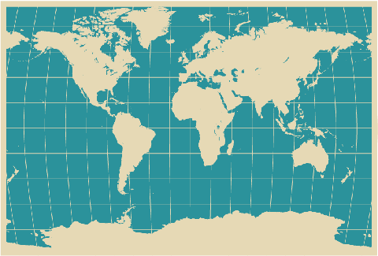

1. Introducción
En la práctica de hoy realizaremos varios ejercicios relacionados con la la red de redes, y el enlace que existe entre Internet y el sistema operativo Windows 7.
2. Buscando nuestra dirección IP
Como ya sabéis, todos los equipos conectados a internet tienen asociada una dirección IP pública que le identifica dentro de internet. ¿Sabrías buscar cuál es la dirección IP que estás utilizando ahora mismo?
- Pista: Busca en Google "cual es mi ip".
2. Localizando en el mapa una dirección IP
A modo de curiosidad, veréis que existe un enlace entre la dirección IP que utilizamos y la ubicación física. No es muy exacto pero sí que se aproxima bastante.
- Busca la dirección IP que has encontrado antes en esta página web: http://www.internautas.org/w-iplocaliza.html
3. Cambiando el fondo de pantalla

Vamos ahora a practicar el cambio del fondo de pantalla, como vimos el otro día.
- Busca por Google Images un fondo de pantalla que te guste de cualquiera de estas temáticas: "playas", "espacio", "formula 1", "Pirineos", "Everest".
- Descarga la imagen a la mejor resolución posible. Normalmente conviene que la resolución sea superior a 1280x1024.
- Establece la imagen de manera que ocupe toda la pantalla.
4. Recortes

Finalmente, os propongo que visitemos unas cuantas webs intersantes, y quiero que me saquéis recortes de todo lo que veáis interesante.
- Busca sitios interesantes que visitar en minube.com y saca recortes de todas las fotos intersantes que veas.
- Han rediseñado la web del Google Art Project. Vamos a visitarla y saca recortes de aquellos cuadros que te resulten más interesantes.
- Finalmente, vamos a visitar la web de Las maravillas del mundo (Google). Saca recortes de los sitios que te resulten interesantes.